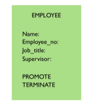

Object-oriented Model
Object-oriented Model model follows the concepts of object-oriented programming in visualizing relationships between data. There are times that the relational model has limited capabilities in handling complex data, so an object-oriented approach was devised for such instances. In contrast to a relational model, wherein data is stored in tables, the object-oriented model uses objects, which contain the data, its attributes, and methods.
History
The roots of object-oriented databases can be traced from the early 1980s with the founding of the Orion Research Project at Microelectronics and Computer Technology Corporation in Austin, Texas, by Won Kim (Grehan, et. al). Then in 1991, the Object Data Management Group (ODMG) was founded and its purpose was to outline and propose standards and guidelines in object data management, the efforts of which was finally completed in 2001, and culminated with the group's disbandment shortly after.
Concepts
In the Object-Oriented Database System Manifesto (OODBMS), Atkinson et. al (1989) defined some mandatory characteristics that an OODB must possess.
- It should be a DBMS and have the following features:
- Persistence
- Secondary storage management
- Concurrency
- Recovery
- Ad hoc query facility
- It should be an object-oriented system, and possess the following characteristics:
- Complex objects
- Object identity
- Encapsulation
- Types or classes
- Inheritance
- Overriding combined with late binding
- Extensibility
- Computational completeness
How Object-Oriented Model Works
In an object-oriented (OO) data model, data is represented as an object which contains not only the data, but also its attributes and methods. A class is any group of objects that you can define, such as an Employee or Manager. For example, the class Employee would typically include the following attributes: Name, Employee_no, and Job_title, and Supervisor.
The method is any set of executable instructions that is declared and initialized in a class, and which may cause changes in its state. For the class Employee, we could use the methods PROMOTE or TERMINATE. If we execute the method TERMINATE, then the corresponding instance of the class Employee will be deleted. If we choose PROMOTE, then it will be updated to the class Manager.
This is where the concept of inheritance, an important feature of the object-oriented model, comes into play. As we can see, classes can have superclasses that form the parent of other classes. When we promote an instance of the Employee class to its subclass, Manager, it can acquire the attributes, traits, and methods of its new class while still retaining some or all of the attributes (and possibly the methods) of its previous class. This way there would be less redundant data since you do not need to create a new instance of a class anymore, and you can simply update an existing class.
Advantages
- The OO model is useful for handling complex data and operations
- Faster processing of data
- Cost-efficient since inheritance allows repeated usage of code
Disadvantages
- The OO model's capacity to process complex data might be too sophisticated for simpler tasks, thus limiting its possible applications
- Not widely used compared to the relational model
- Encapsulation limits its flexibility
Conclusion
The object-oriented model, while it presents wider possibilities in data manipulation, is still stymied by its limitations. Perhaps further developments down the line may yield improvements in implementation methods for the OO model, and open the door to more opportunities for its wider adoption.